双林寺 · 彩塑精选
塑语千年
山西平遥 · 桥头村 —— 一座古寺，两千余尊彩塑。
轻转这些画面，一殿一殿地看过去。
序 · 缘起
一寺之缘
先认识这座寺，再认识它的彩塑。
双林寺在山西平遥县城西南六公里的桥头村，原名中都寺。寺院坐北朝南，十座殿堂分列三进院落之中，外墙以夯土包砖，朴素得像一座乡间小堡。1988 年，它被公布为第三批全国重点文物保护单位；1997 年，又随平遥古城一同列入《世界遗产名录》。
使这座小寺名扬天下的，不是殿宇，而是殿里的彩塑。寺内保存着宋、元、明、清历代彩塑两千余尊，以明代作品为主体，密度之高、保存之好，在汉地寺观中极为罕见，因而有“东方彩塑艺术宝库”之誉。（塑像总数有 2052 与 2056 两说，姑存其疑。）
双林寺的塑像属“寺观彩塑”——它们不在幽深石窟里，就在人们日常礼佛的殿堂之中，就近可看、伸手可及。这使它们比石窟造像多了一层人间的温度：有笑意盈盈的弥勒，有蹙眉张目的护法，也有怀抱孩童的娘娘。
本页不贪多，也不逐殿走过。我们从两千余尊里，精选五组——悬塑、护法、千手观音、殿宇梁枋、人间与时间——一组一组，把它看透。所谓“塑语千年”，正是想替这些沉默了数百年的泥土，说几句话。
沿革 · 从北齐到今天
双林古寺 · 泥骨千年
在往下浏览这些彩塑之前，不妨先玩一局——化身青铜鸮卣，漫游六座大殿，集齐六片「泥骨」拓片。
进入小游戏天王殿 · 护法金刚
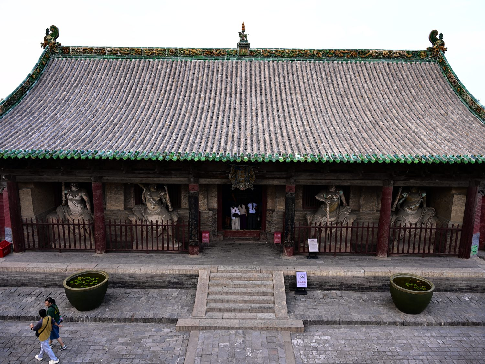
进天王殿，先遇见的不是佛，是四位守门的金刚。
天王殿是山门内的第一重殿，也是中轴上最先迎接来客的一座。它面阔宽展，正中供弥勒、背后立韦驮；而最外一圈的檐廊下，另有四尊金刚一字排开，把守着门口。
这四尊金刚神情各异——愁、怒、沉、威，各不相同，却同是金刚力士的气派：蹙眉、张口、握拳、扭身，通体披甲，高近三米，眉眼以琉璃嵌珠为瞳。民间惯以“哼”“哈”称其声口，一放一收。它们不着意礼佛，只专司“挡”：把纷扰拦在门外，把宁静留在殿中。
四尊并列，或怒或沉、或敛或张，把“护法”的神情演成四种不同的力道。下面，一尊一尊地看过去。
门 口 · 四 大 金 刚
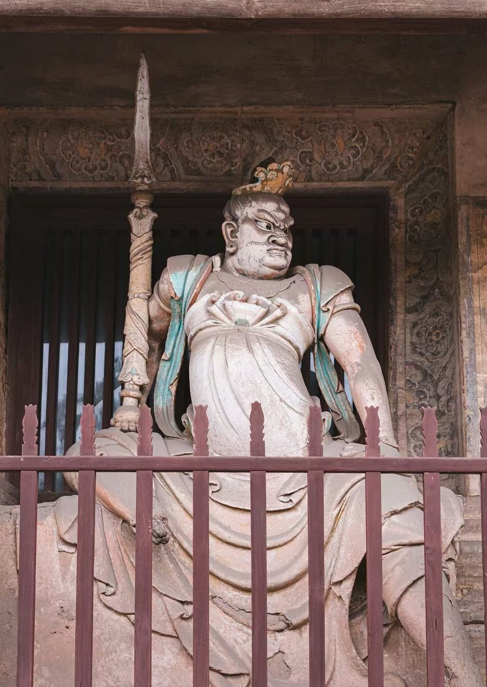
愁相金刚闭口蓄力
双唇紧闭，眉头深锁，身体微微向右扭转，胸腹的肌肉隆起；目光低垂，并不看人。它不作吆喝，也不动声色——“怒”到了极处反成凝重，力气全蓄在肩背之间，是引而不发、闭口蓄力的一尊。
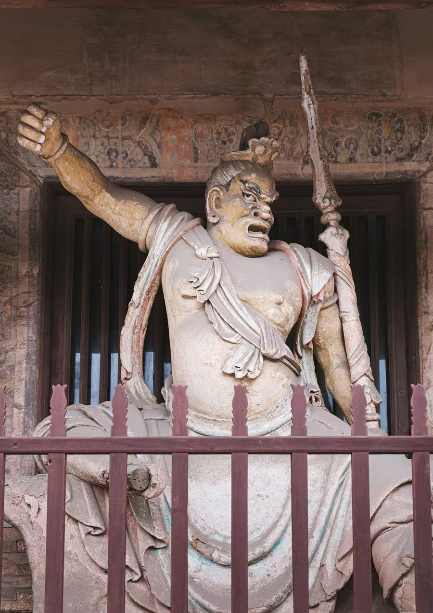
怒相金刚张口呵斥
动势最强的一尊：嘴巴大张，作呵斥呐喊之状，一臂抬起、拳头紧握，整个身体都在往外“顶”。若说金刚各有声口，它便是那一声痛快淋漓的“哈”。明代匠人把喊到极致的一瞬凝在泥里——张开的嘴、绷起的颈筋、扬起的拳，都成了定格的雷声。
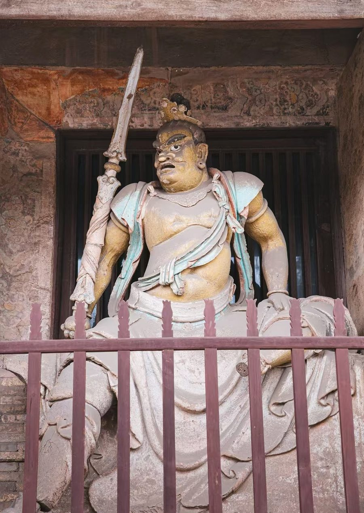
沉相金刚动而愈沉
动静之间偏于“沉”。嘴微微张开，头略向后仰，躯干扭转，浑身的肌肉却绷得极紧：它不出声，也不松懈，像一张被拉满却迟迟不放的弓，自有压得住场子的定力。
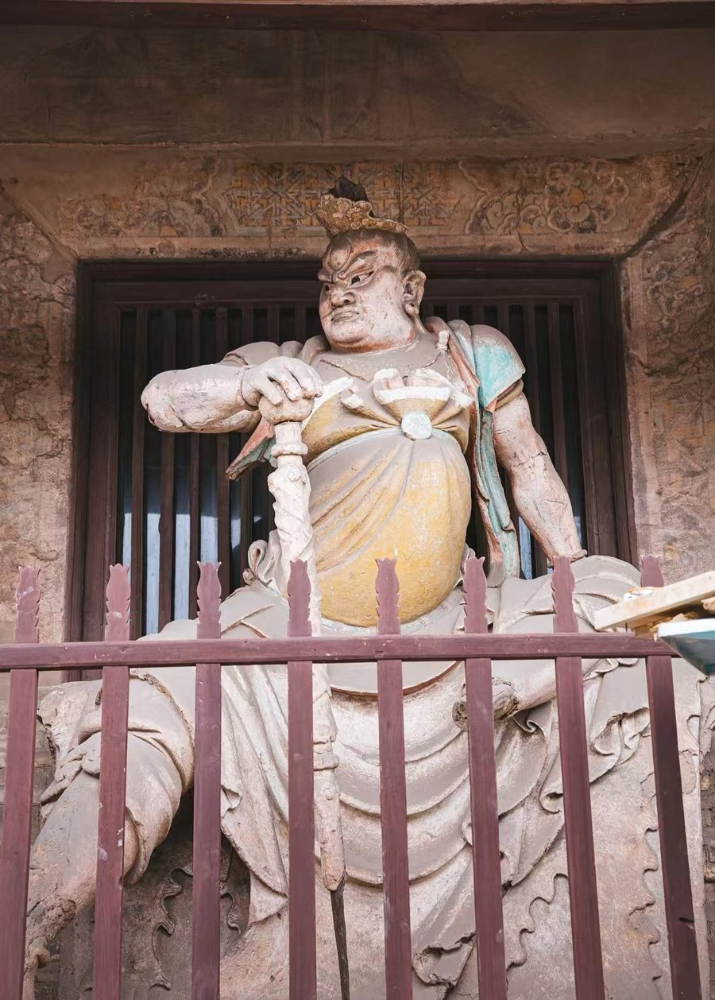
威相金刚扶杵下视
气势最向内敛。双唇紧闭，一手扶着金刚杵，目光向下垂视；它不喊、不张，只以沉静的目光俯视来者。“哼”正是它无声的声口——比呐喊更笃定，比怒目更慑人。守门者不必声色俱厉，威仪自在眉宇之间。
释迦殿 · 主尊与胁侍
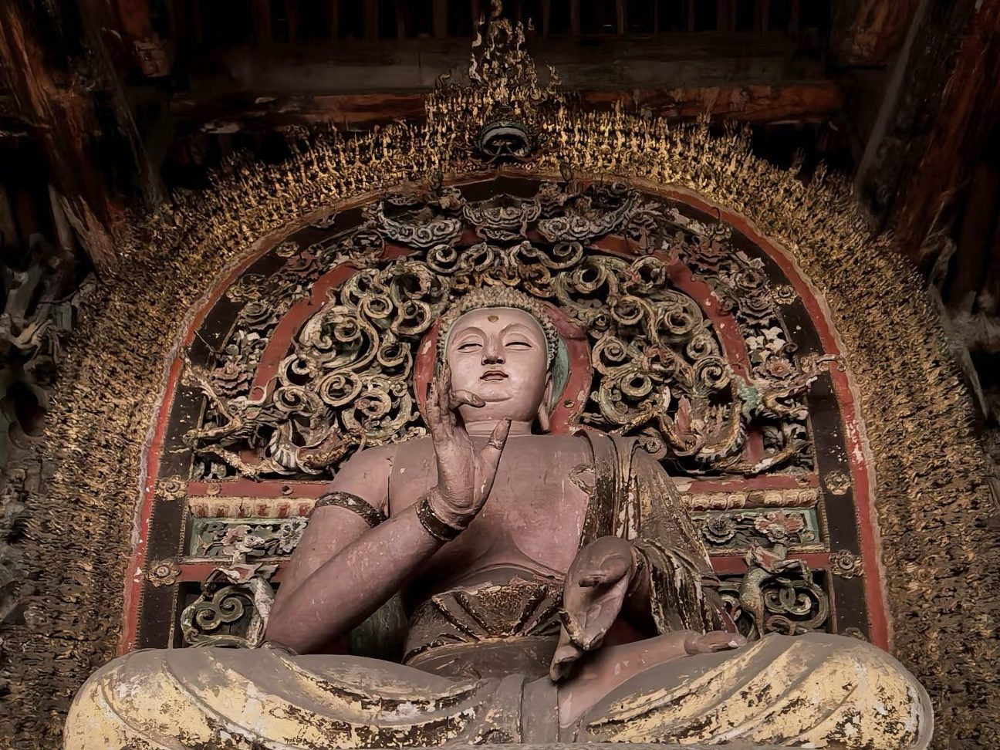
一座殿，把释迦牟尼的一生“演”在墙上。
释迦殿在前院正中，是前院的主殿。殿中主尊是释迦牟尼，两侧侍立文殊、普贤二菩萨；而最让人驻足流连的，是四壁的悬塑。
四壁之上，匠人以悬塑铺开一部“佛传”——从乘象入胎、树下诞生，到成道、说法、涅槃，分作数十组，一层层“挂”满墙面，像一部立体的连环画。二百余尊小像，讲的正是释迦牟尼的一生。
主尊居中、胁侍在侧、群像满壁——一殿之内，便是一整个世界。下面先看主尊，再看两位胁侍。
一佛二菩萨
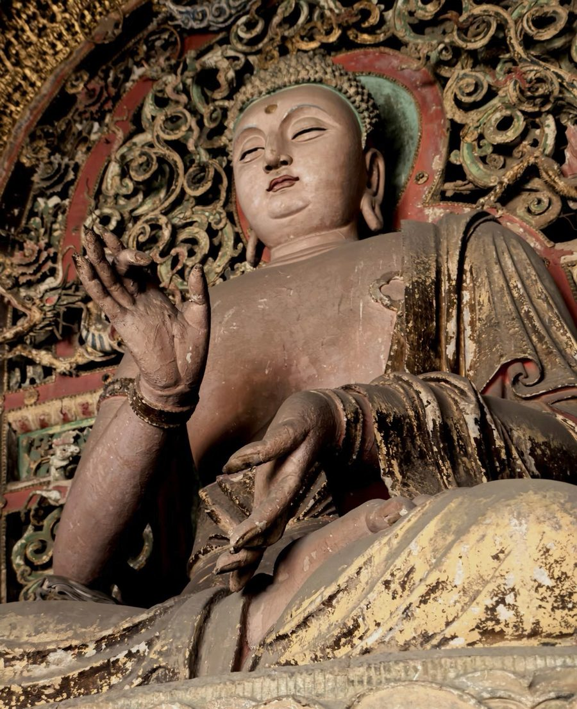
释迦牟尼佛一殿之主
主尊释迦牟尼结跏趺坐于莲台之上，一手抬起、一手垂按；面容圆润沉静，双目微垂，身后是层层镂空的背光。作为一殿之主，也是这满壁故事的“主角”，他不张扬，只以一身静气居中而坐。
莲花座、背光、手印——每一处都在说佛之“觉”。而满壁的悬塑自他身后铺开，把这位主尊的一生，演成了一圈环绕的连环画。
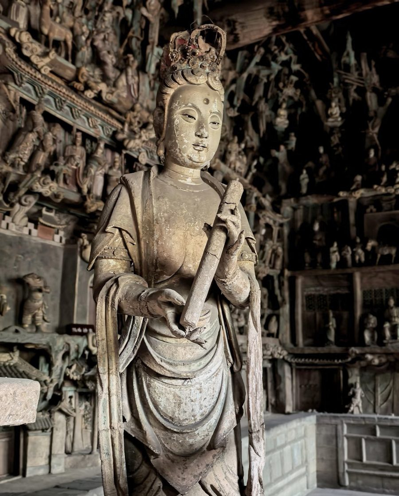
文殊菩萨智慧第一
主尊之侧，文殊菩萨侍立。文殊象征智慧，常与普贤相对、分侍佛之左右；这一尊头戴宝冠、身姿微侧，手中持着法器，面容清秀而沉静。满壁悬塑在身后层层叠起，人与壁塑几乎融成了一体。
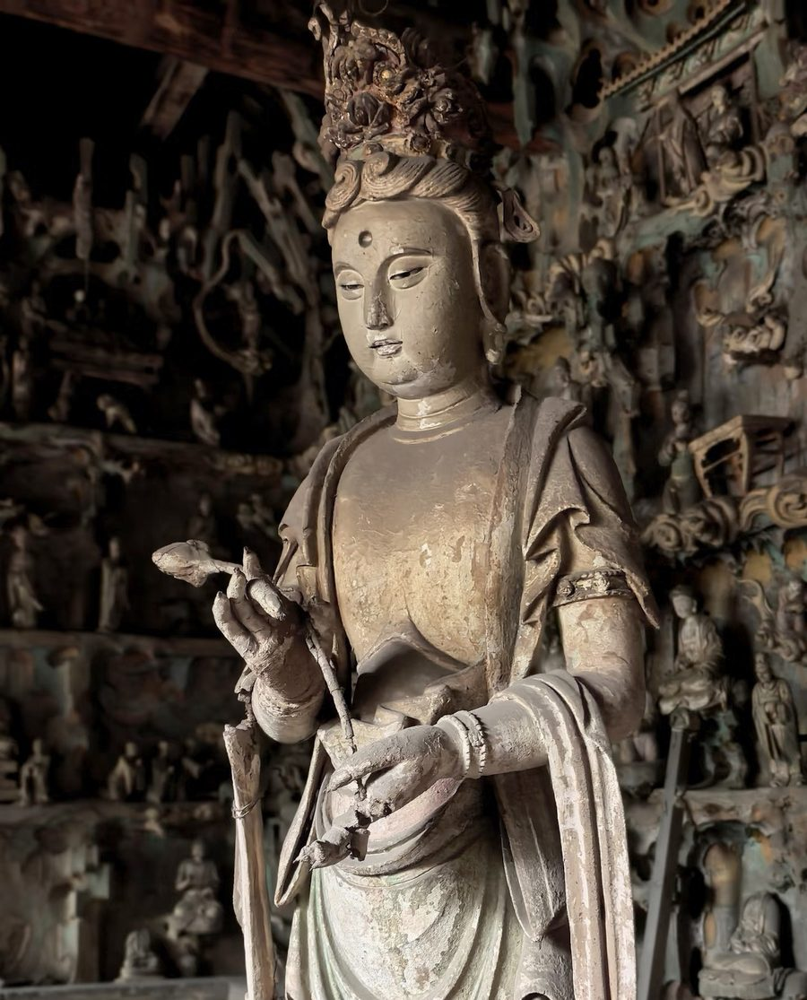
普贤菩萨行愿无边
另一侧是普贤菩萨。普贤象征“行”与“愿”——把智慧化为践行；这一尊同样头戴宝冠、衣饰繁复，手中持物、眉眼低垂。文殊表“智”、普贤表“行”，二者相配，正是佛之“悲智双运”的两面。
罗汉殿 · 十八罗汉
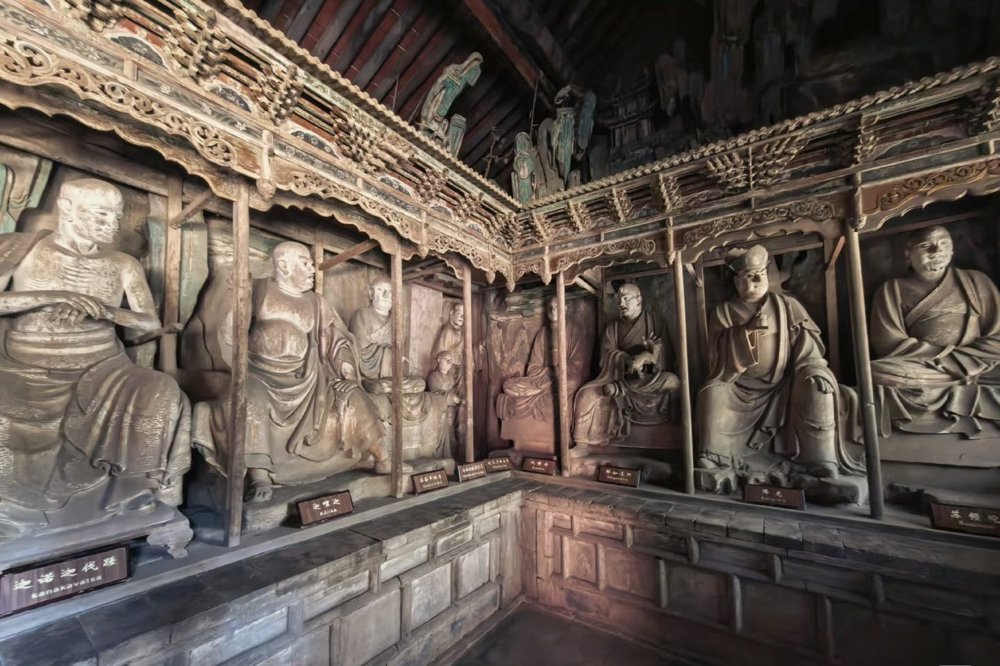
十六罗汉、十八罗汉，塑尽了人间的神情。
罗汉殿在前院东侧，与对面的地藏殿相对。殿内现存明代彩塑十九尊——十八罗汉依山墙、后檐墙列坐，加上主尊，几近占满一堂。它们接近真人大小，或静或动、或立或坐，神情各异。
罗汉不像菩萨那样庄严端好，而是各有各的年纪与脾气：有的蹙眉深思，有的掀眉大笑，有的侧耳倾听。正是这份“像人”，让双林寺的罗汉被反复称作“神品”——明代匠人把世俗的百态，请进了佛殿。
下面挑出几尊，看看他们各自的神情。
十八罗汉 · 一殿的神情
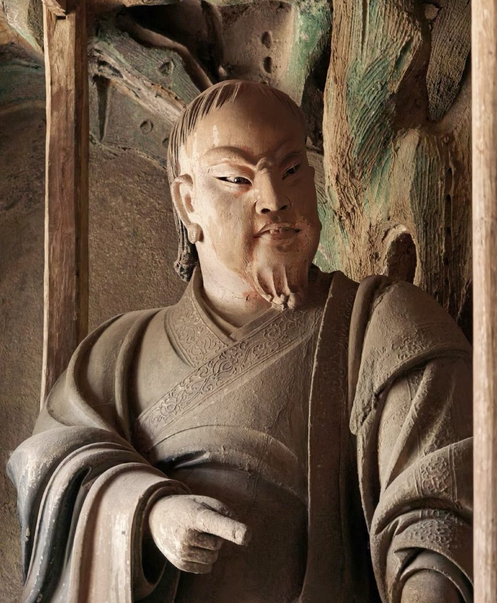
辩经罗汉抬指论法
一臂抬起、手指向上，像是把话说到这里；身体微微前倾，目光落在前方。罗汉“辩经”，辩的是佛法义理——他不必开口，一个手势，便把那场“论法”定格在了半空。
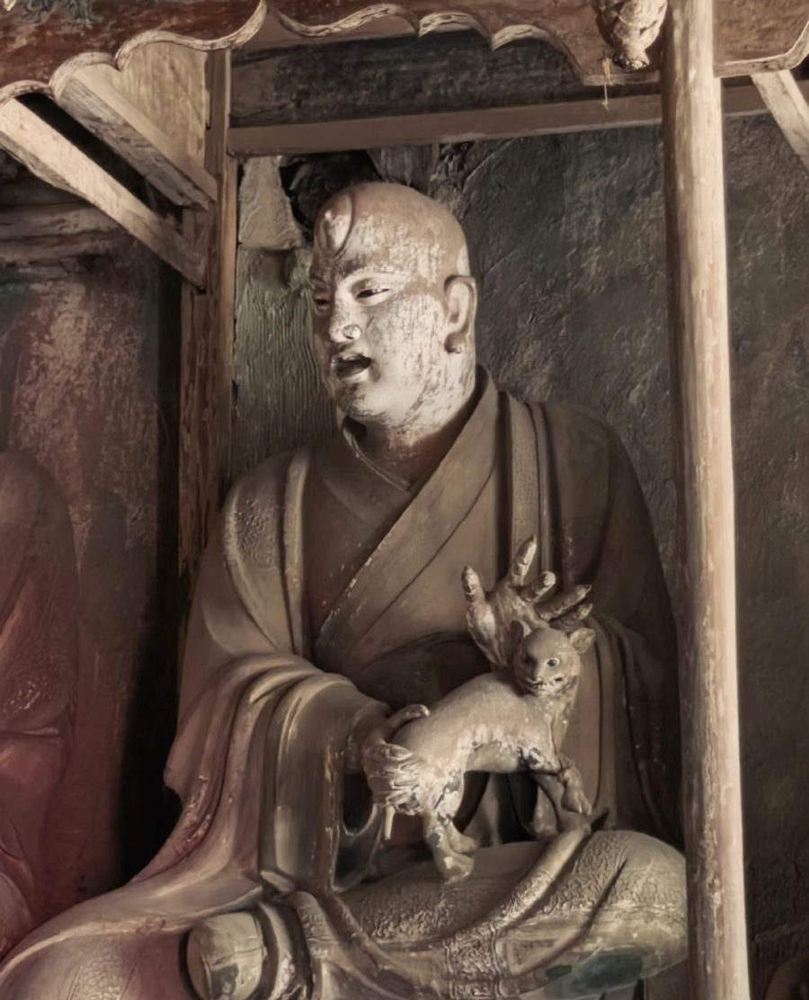
抱猫罗汉伏猛为柔
怀里抱着一只小猫，一手拢着、一手托着，神情温驯而专注。罗汉常见“降龙伏虎”的题材，这一尊却把“降伏”抱成了怀里的柔软——威猛之外，也有俯身相待的一面。
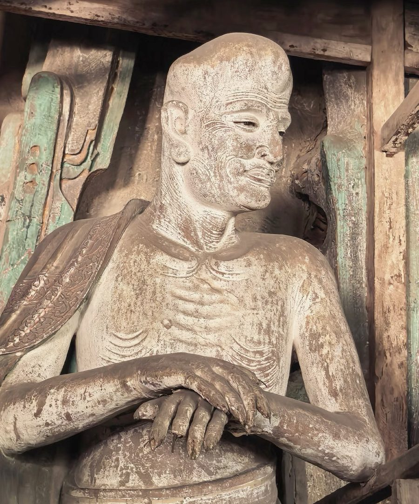
瘦骨罗汉头陀苦行
身形清瘦、肋骨毕现，双手交叠于胸前，头微侧、目半闭。这是“苦行”的相：罗汉以头陀苦修著称，塑像便把这副瘦骨嶙峋、却又沉静自持的样子如实塑出。瘦到极处，反而透出一种定力。
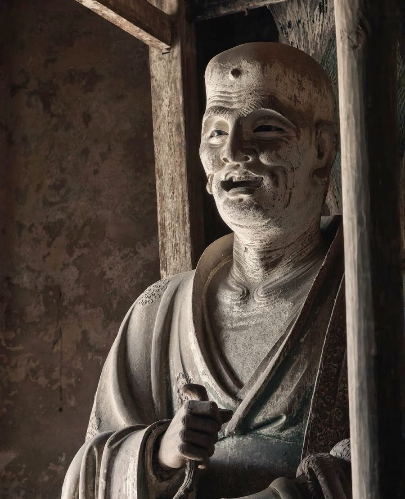
笑相罗汉眉目里的笑
眉梢眼角都带着笑：嘴微启、须微翘，像是刚听见一句有趣的话。十八罗汉里，他大概最好亲近——没有威仪，也不端着，只把一份乐呵写在脸上。
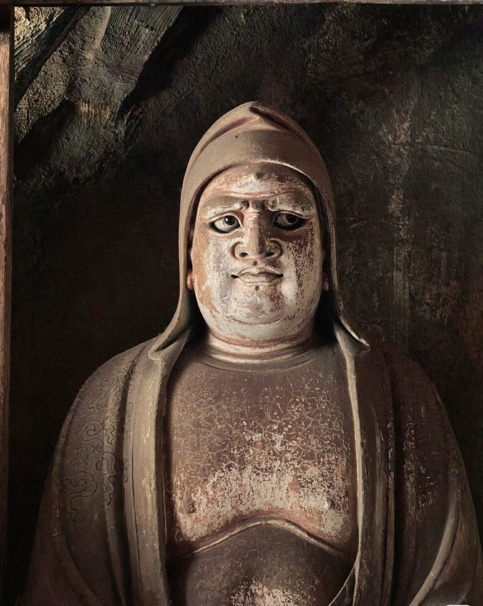
风帽罗汉静坐如定
头戴一顶风帽，把两颊与额角遮去大半，只露出一张沉静的脸。他不出声、不动作，像在山中独坐了很久——一顶帽子，便把他与满堂的热闹隔了开来。
千佛殿 · 悬塑满壁
一整面墙，就是一座立体的佛国。
千佛殿在中院东厢，坐东朝西，悬山顶，面阔七间，面积约二百八十五平方米。殿内保存明代彩塑近五百尊，约占全寺总数的四分之一；主像是自在观音，左侧立着那尊更负盛名的韦驮。
最动人的，是四壁与梁枋之间的“悬塑”。它不是独立摆放的圆雕，而是贴壁而塑、向外出挑的高浮雕群像——佛、菩萨、罗汉、供养人、天部层层相叠，借前遮后，一面墙就像一整个立体的佛国。
“悬”正是它的功夫：内以木骨为筋，缠草麻，外敷泥塑形；一端固定在墙、一端向外悬挑，数百尊小像贴着壁立了几百年而不坠。
排布也讲究——主尊居中，胁侍与群像向两侧、向上下层层围拢，造出一层一层向内的视线；小像虽只巴掌大小，眉目与衣纹仍一丝不苟。远看是满壁生辉，近看，是无数个被认真塑造过的“人”。
满壁悬塑之外，殿中正中立主尊自在观音、左侧立韦驮——这是两尊独立的圆雕，也是千佛殿最负盛名的两尊名品，下面单独来看。
殿中名品
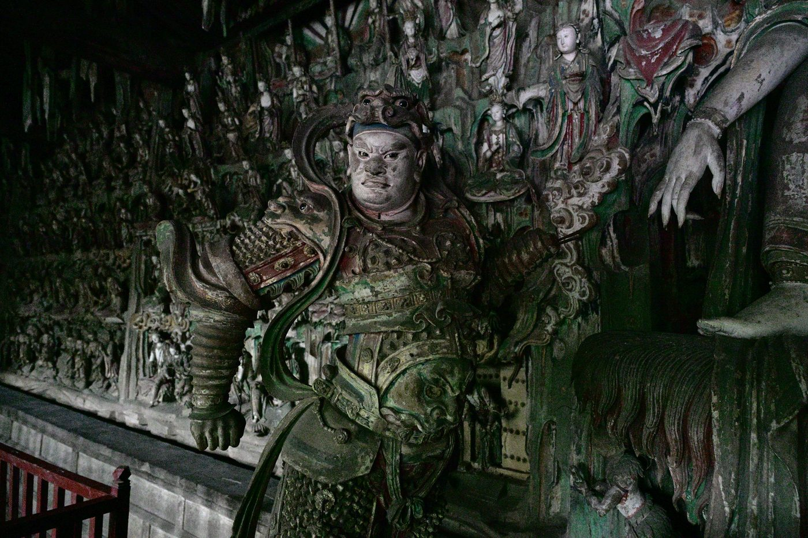
韦驮全国韦驮之冠
自在观音的左侧，立着千佛殿、乃至整个双林寺最负盛名的一尊像——韦驮。韦驮是佛教的护法神，作武将装束。这尊像高约一米六，全身重心落在左足，躯干却向右夸张地扭去，头亦随势微侧：远看是静立的，近看却通身蓄势，仿佛下一刻便要发劲——故人称“不动之动”。甲胄的压叠、帛带的飘举、筋肉的起伏，都在这一口气里绷紧。此像年代一般定为明代；民间誉其为“全国韦驮之冠”。
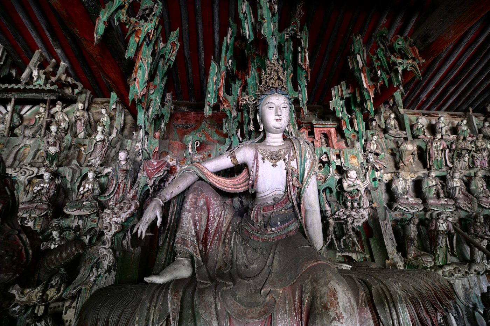
自在观音殿之主尊
千佛殿的主尊是自在观音。她不作端坐莲台的庄严相，而是一足下垂、一臂斜倚地闲坐——“自在”二字便由此而来：观自在，观的是心无挂碍的自在。头戴宝冠，璎珞垂胸，衣袂顺体而下，面容丰润，神情松弛；身后与两侧，悬塑的菩萨、罗汉、供养人层层环列，像把这位“观自在者”围进了一个立体的世界。此像为明代彩塑，具体尺寸未见确切公开数据，姑存其疑。
菩萨殿 · 千手千眼观音
二十六只手臂，各有各的渡口。
菩萨殿在大雄宝殿西侧。殿中主尊是千手千眼观音：头戴宝冠，二十六臂如莲瓣般次第展开，两臂当胸合掌，其余各持法器——轮、伞、花、剑……密而不乱。
“千手”并非真有一千只手。以多臂之相，喻观音以无量方便救度众生；“千眼”则喻其观照世间疾苦、无处不达。手臂与手中所持，既是她的“法门”，也是递给观者的一份清单。
双林寺这尊作廿六臂之相，是“千手”诸种规制中的一种。宝冠、璎珞、臂钏层层装点，指节与手腕的姿态纤细而有力；殿内四周，还环列着数以百计的菩萨悬塑，主像与壁塑相叠，一站进去，便像落入一整个立体的佛国。
手中 · 持物
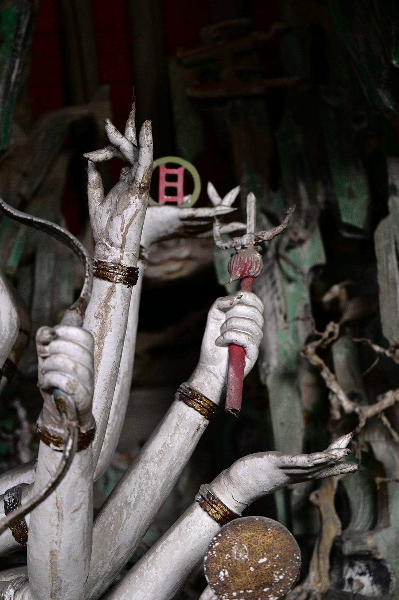
手中 · 持物一件法器，一道法门
千手观音的每一只手，都握着一件不同的法器，或结着不同的手印。它们不是随手捏出来的——哪只手托什么、指节如何屈伸、法器朝向哪一方，都有讲究；一套手组合起来，便是一部看得见的“法器清单”。
常见的有：法轮（喻佛法常转不息）、莲花（喻清净不染）、宝剑（喻断一切烦恼）、宝珠（喻所求满愿），此外还有净瓶、经卷、宝弓、宝伞、金刚杵……手中所持，其实都是她“渡人”的法门——每一件法器，对应一种救度；所谓“千手”，正是以多臂之相，喻其方便无量。
这些手也最难塑：手臂既多、手指又细，稍不留神便会折断。塑时须在细指里埋进筋条作骨，外层再上细泥、敷彩描金，方能既纤细又立得住；眼珠另以琉璃嵌装，光一过便似有真瞳。（具体工艺以馆方说明为准。）
于是，一尊千手观音，既是礼拜的对象，也是一部“手的百科”——把抽象的“救度”，一一落在了可触可看的器物之上。
大雄宝殿 · 三身与接引
三身佛 · 一佛化三相
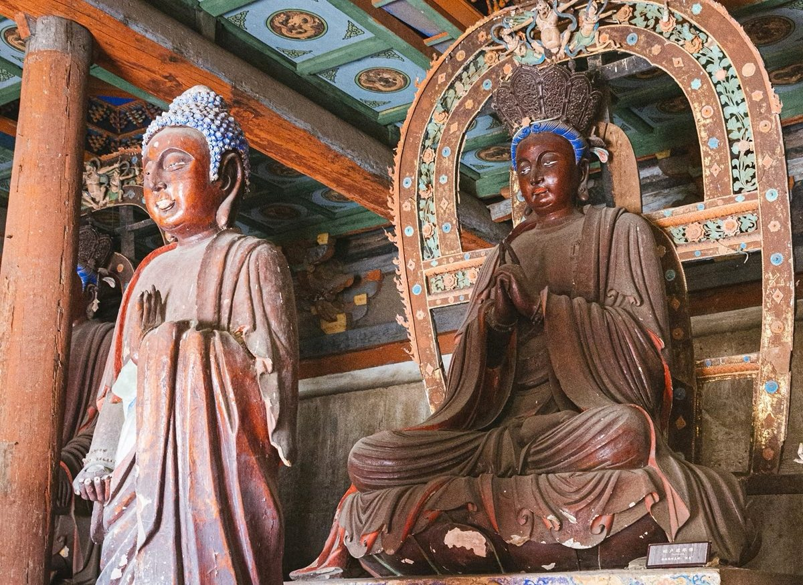
天王殿护法凌厉，大雄宝殿归于沉静。
一殿之中，主尊三身佛阐释佛之本相，迎门的接引佛俯身渡人——一动一静，正是这座寺精神内核的落脚处。
一佛化三身，诉说佛的三重境界。大雄宝殿内坛供奉三尊坐佛：法身毗卢遮那佛、报身卢舍那佛、应身释迦牟尼佛。三像体量宏大，沉静安坐，衣纹厚重古朴，身后镂空背光繁复华丽。
法身是本体，报身是圆满功德之相，应身是入世度人的化身。三佛同坛，把抽象的佛法，凝塑成殿堂中央肃穆的形体；与天王殿张扬凌厉的护法金刚，形成一动一静的对照。
接引佛 · 铁骨渡凡尘
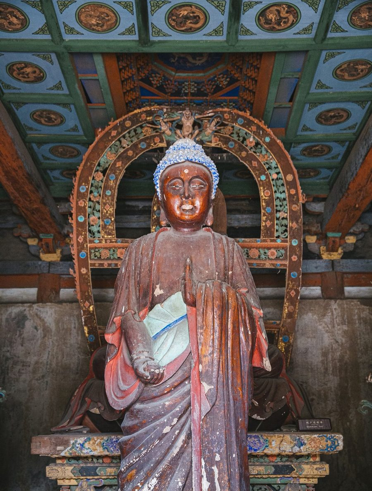
接引佛铁骨渡凡尘
铁铸为骨，泥塑为衣，迈步向前接引众生。立于三身佛前方、正对殿门的阿弥陀接引佛，是双林寺极为特殊的铁铸包泥彩塑：塑像微微前倾，仿佛走出佛坛，奔赴前来的观者。
以铁为骨，是这类高大立像得以挺立数百年的关键；外层再敷泥彩绘，既保结构的稳固，又不失泥塑面目的细腻。褪去护法的威慑，这尊立佛带着温柔的迎候——一踏入大殿，便与之迎面相遇。
卢舍那佛 · 报身圆满
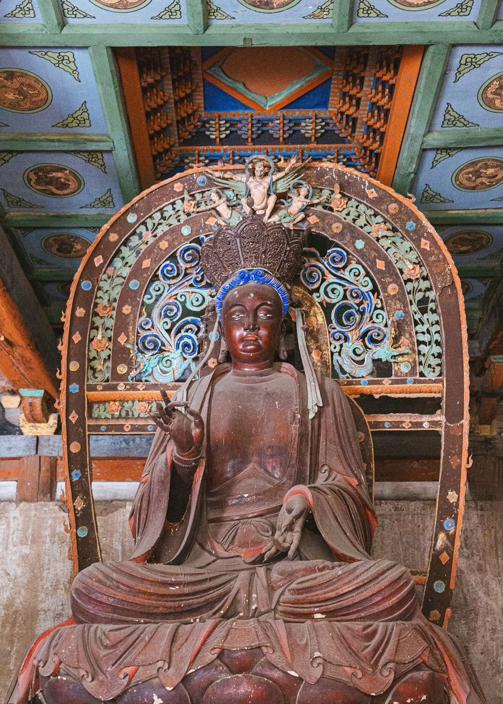
卢舍那佛报身圆满
“卢舍那”意为光明遍照。三身佛之中，报身是佛修行圆满、功德所成的“果报之身”——不同于法身的无形无相，报身是向菩萨示现的、庄严华贵的一面。
这一尊头戴宝冠、结跏趺坐，双手当胸；身后背光层层镂空，衣纹随坐姿自然垂落。面容丰满而沉静，不靠威仪震慑，只以一身静气，与三佛同坛安坐。
胁侍 · 文殊 · 天女 · 胁侍菩萨
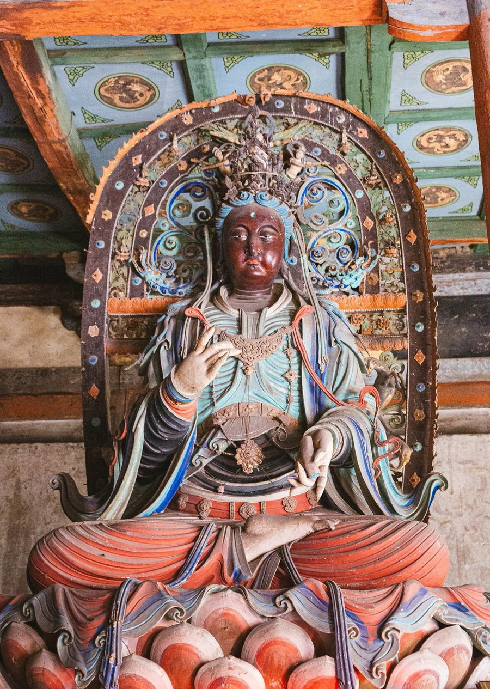
文殊菩萨智慧第一
坛上三佛之外，另有菩萨环侍，文殊即其一。文殊象征智慧，常与普贤分侍佛之左右；这一尊头戴宝冠、端坐莲台，身后背光镂空繁复。面容不作威严，眉眼低垂而清明——靠的是一身静气，而非声势。
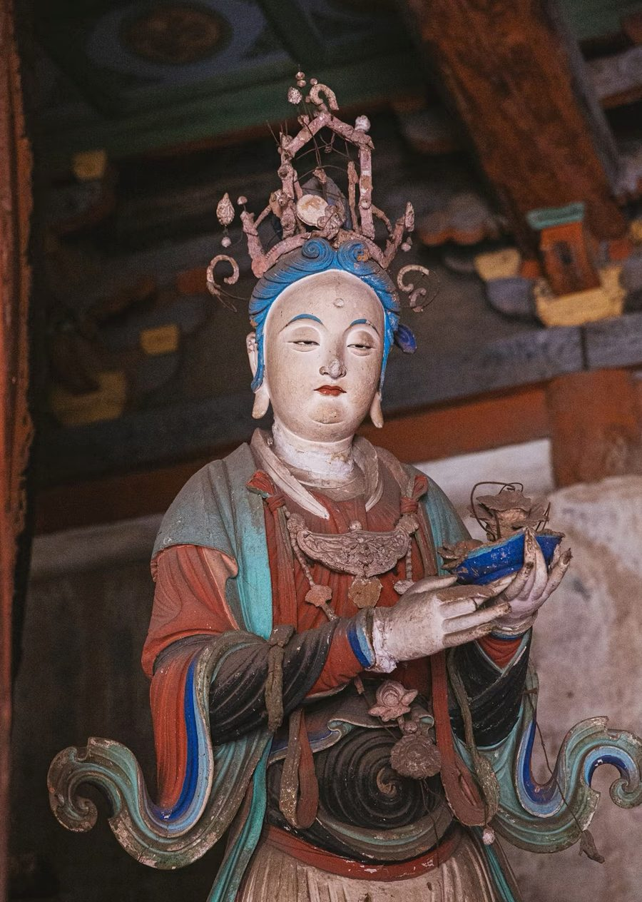
供养天女佛国的灵动
供养天女侍立于佛坛一侧，双手捧物、低眉含笑。花冠高耸而繁复，衣袂与披帛翻卷如风，是庄严佛国里一处灵动的点缀。天女不执威仪，也不作说教，只以一身华饰与笑意，替满坛的沉静添上一点“人”的生气。
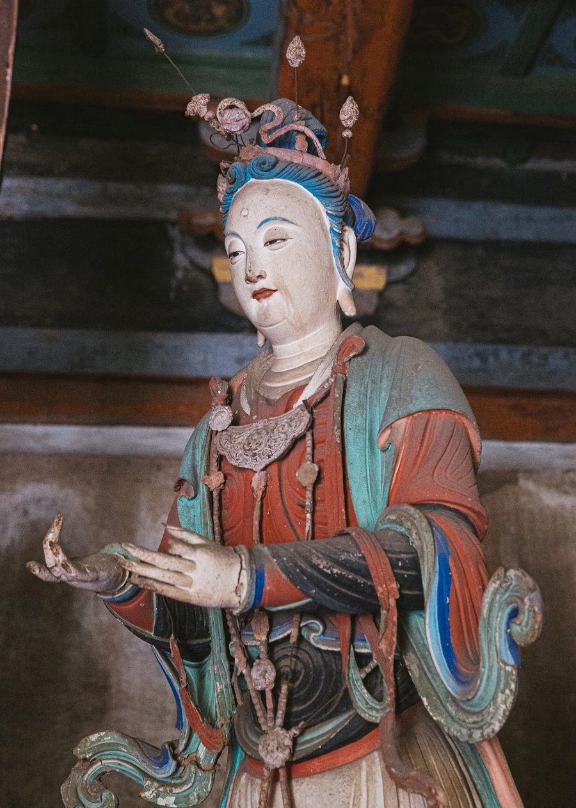
胁侍菩萨欲言又止的神情
佛坛两侧，一位胁侍菩萨立在余荫里。这位菩萨身姿微侧、头部轻转，一臂向外舒展，像是在应答，又像是在等待。衣饰繁密、披帛垂落，眉眼温润含笑——在满坛肃穆的塑像之间，这一种“欲言又止”的神态，最是耐看。
尾声 · 语
等你来看
两千余尊彩塑，沉默了几百年。它们不说话，却把一整个时代的手艺、信仰与人情，都塑进了泥土里。你在这里与它们照过一面，便也算听过一回“塑语千年”。
双林寺 · 彩塑精选